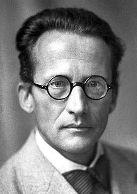
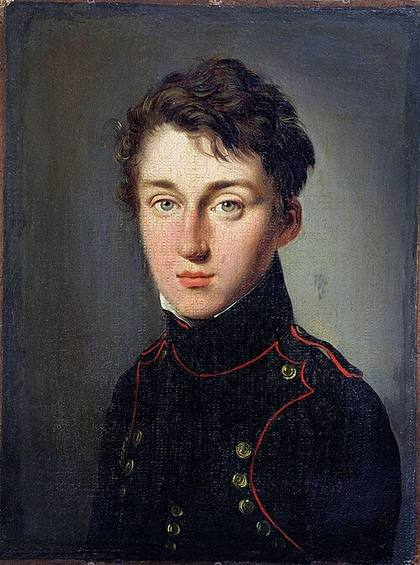
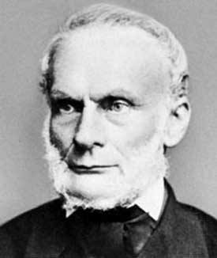
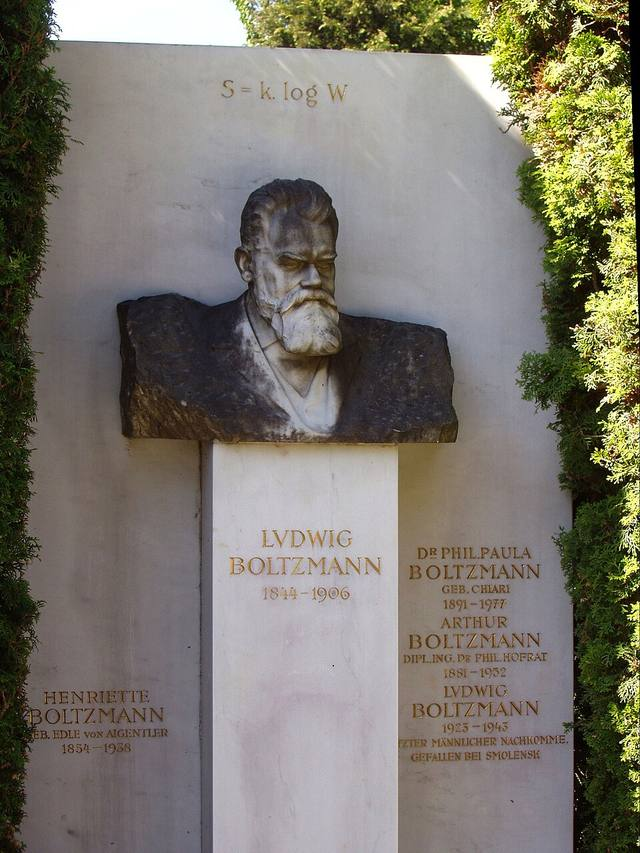
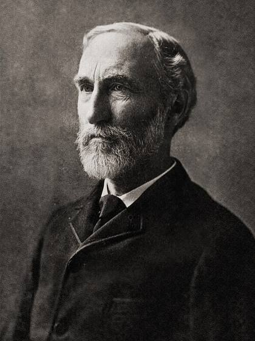
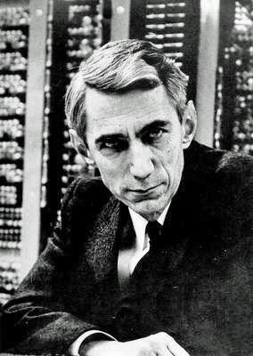
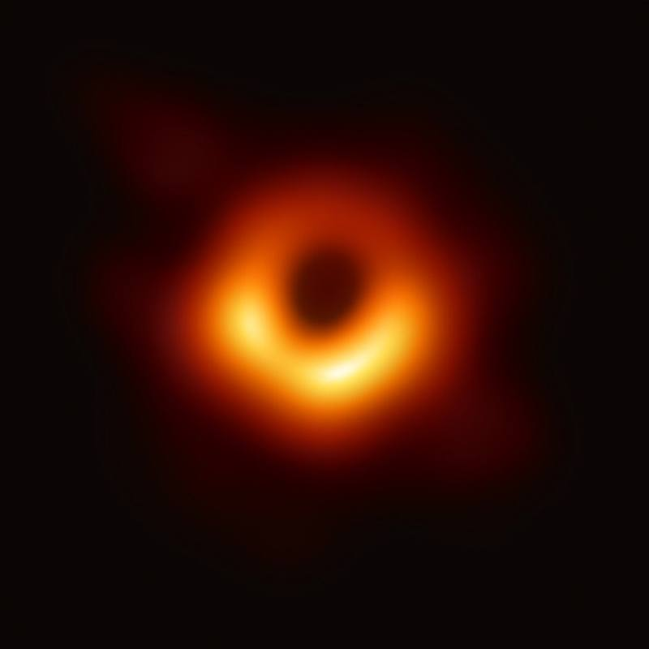

생명은 법칙을 어기지 않아요
1943년 더블린 트리니티 칼리지 강연(책 『생명이란 무엇인가』, 1944)에서 슈뢰딩거는 생물이 주변에서 “음의 엔트로피”를 끌어와 질서를 유지한다고 말했어요. 오늘날 말로 하면 자유 에너지예요. 지구의 생명은 햇빛을 쓰고 열과 노폐물을 내보내기 때문에, 전체 엔트로피는 여전히 늘어나요.
00 · ENTROPY
뜨거운 커피는 저절로 식지만, 식은 커피가 저절로 다시 뜨거워지는 일은 없어요. 물에 떨어진 잉크는 퍼지기만 하고 다시 한 방울로 모이지 않죠. 이 한쪽 방향의 비밀에 이름을 붙이면 바로 엔트로피예요.
엔트로피는 에너지가 얼마나 넓게 퍼져 있는지, 다시 말해 눈에 보이는 같은 상태를 만드는 미시적 배치가 몇 가지나 되는지를 나타내는 양이에요.
입자 상자 데모: 오른쪽 끝에 모여 있던 입자들이 칸막이가 열리면 상자 전체로 퍼져요. 저절로 다시 한쪽 끝에 모일까요? 기다려 보세요. 아마 우주가 끝날 때까지도 안 모일 거예요.
01 · WHAT IS ENTROPY
한마디로 하면 “경우의 수”예요. 우리가 보는 큰 그림(거시 상태)은 같아도, 그걸 만드는 입자들의 세세한 배치(미시 상태)는 엄청나게 많을 수 있거든요.
거시 상태는 우리가 재는 것이에요. 온도, 압력, 혹은 “동전 4개 중 앞면 3개” 같은 것이죠.
미시 상태는 모든 입자 하나하나의 정확한 위치와 움직임이에요. “첫째·둘째·넷째 동전이 앞면”처럼요.
자연은 어떤 특별한 힘에 끌려서가 아니라, 그저 미시 상태가 압도적으로 많은 쪽으로 흘러가요. 확률이 한쪽으로 너무나 기울어 있어서, 거의 확실하게 그렇게 되는 거예요.
엔트로피가 높다는 건 에너지가 고르게 퍼져 있다는 뜻, 낮다는 건 한곳에 몰려 있다는 뜻이에요. 단위는 J/K(줄 퍼 켈빈)예요.
같은 겉모습을 만드는 입자 배치가 많을수록 엔트로피가 커요. 볼츠만은 이것을 S = k log W라는 식으로 정리했어요.
메시지가 얼마나 예측하기 어려운지도 같은 수학으로 잴 수 있어요. 섀넌은 이것을 ‘정보 엔트로피’라 부르고 비트로 쟀어요.
02 · PLAY WITH PROBABILITY
동전 4개를 던지면 모두 앞면이 나올 확률은 16분의 1(6.25%)이지만, 앞면 2개·뒷면 2개는 16가지 중 6가지(37.5%)예요. 동전 수를 늘리면 무슨 일이 생길까요?
앞면 개수별 미시 상태 비율 (막대 높이)
S = k log W
S는 엔트로피, W는 미시 상태의 개수, k는 볼츠만 상수(1.380649 × 10−23 J/K, 2019년 SI 재정의 이후 정확한 값)예요.
말로 풀면 “가능한 배치가 많을수록 엔트로피가 크다”는 뜻이에요. 기체 분자 10개가 모두 상자 왼쪽 절반에 모일 확률은 1/1,024이지만, 분자 1몰(약 6 × 1023개)이라면 사실상 0이에요. 그래서 기체는 퍼지기만 하고 저절로 “안 퍼지는” 일은 없어요.
03 · THE SECOND LAW
열역학 제2법칙: 외부와 차단된(고립된) 계의 엔트로피는 줄어들지 않아요. 계는 엔트로피가 가장 큰 평형 상태를 향해 갑니다.
클라우지우스의 표현: 다른 변화 없이 열이 차가운 물체에서 뜨거운 물체로 옮겨 가는 일은 없어요. 냉장고가 안을 차갑게 만들려면 바깥에서 일(전기)을 해 줘야 하죠.
켈빈의 표현: 하나의 열원에서 받은 열을 남김없이 일로 바꾸며 계속 도는 기관은 만들 수 없어요.
무한히 느린 이상적인 ‘가역’ 과정에서는 dS = δQ/T예요. 하지만 마찰, 화학 반응, 온도 차를 건너는 열 흐름 같은 현실의 ‘비가역’ 과정은 엔트로피를 덤으로 만들어요(ΔS > Q/T).
얼음은 녹고, 커피는 식고, 잉크는 퍼져요. 모두 에너지와 입자가 더 많은 미시 상태로 퍼져 나가는 일이에요. 거꾸로 돌린 영상이 어색하게 보이는 이유죠.
두 블록이 같은 온도(50°C)가 될 때까지 열이 흐르고, 전체 엔트로피는 늘어나요(ΔS > 0). 반대 방향은 저절로 일어나지 않아요.
04 · STORY OF A WORD
증기기관을 연구하던 공학자의 질문에서 시작해, 묘비에 새겨진 방정식을 지나, 디지털 통신의 언어가 되기까지.

『불의 동력에 관한 고찰』에서 열이 높은 온도에서 낮은 온도로 “떨어질” 때 일을 한다고 봤어요. 물레방아 비유로 제2법칙의 씨앗을 뿌렸죠.

그리스어 ‘변환(transformation)’에서 ‘엔트로피’라는 단어를 만들었어요. 일부러 ‘에너지(energy)’와 비슷하게 들리도록 지었대요.

엔트로피를 미시 상태의 개수로 정의했어요(S = k ln W). 이 식은 오스트리아 빈 중앙묘지에 있는 그의 묘비에 새겨져 있어요.

1870년대부터 1902년까지 통계적 엔트로피를 일반화했어요. 엔트로피가 “초보자에게는 모호해서 거부감을 줄 수 있다”고 경고하기도 했죠.

논문 「통신의 수학적 이론」으로 정보 엔트로피를 탄생시켰어요. 열역학의 단어가 정보의 세계로 건너간 순간이에요.
05 · ENTROPY AS INFORMATION
섀넌 엔트로피는 메시지가 평균적으로 얼마나 “예측하기 어려운지”를 재요. 결과를 맞히기 어려울수록 그 결과가 전하는 정보가 많아요.
공정한 동전은 정확히 1비트예요. 결과를 전혀 예측할 수 없으니까요.
1 bit
공정한 동전 한 번 던지기의 엔트로피. 기울어진 동전은 결과가 뻔해질수록 1비트보다 작아져요.
0.6–1.3
섀넌의 실험으로 추정한 영어 글자 하나당 정보량(비트). 26개 글자를 무작위로 쓸 때 필요한 약 4.7비트(log₂26)보다 훨씬 작아요.
ZIP
그래서 글은 잘 압축돼요. 섀넌의 정보원 부호화 정리에 따르면 엔트로피는 손실 없는 압축의 넘을 수 없는 하한선이에요.
반복되는 글
ABABABABABABABABABAB
다음 글자를 쉽게 맞힐 수 있어요 → 정보량이 적고, 아주 짧게 압축돼요(“AB를 10번”).
무작위 글
QZJXKVWMFPLYTRHGNDBC
다음 글자를 맞힐 방법이 없어요 → 정보량이 많고, 거의 압축되지 않아요.
오늘날에도 엔트로피는 데이터 압축과 머신러닝(예: 교차 엔트로피 손실 함수)의 핵심 개념이에요.
06 · LIFE, TIME & THE UNIVERSE
커피 잔에서 시작한 이야기는 살아 있는 세포를 지나 블랙홀과 우주의 운명까지 이어져요.

1943년 더블린 트리니티 칼리지 강연(책 『생명이란 무엇인가』, 1944)에서 슈뢰딩거는 생물이 주변에서 “음의 엔트로피”를 끌어와 질서를 유지한다고 말했어요. 오늘날 말로 하면 자유 에너지예요. 지구의 생명은 햇빛을 쓰고 열과 노폐물을 내보내기 때문에, 전체 엔트로피는 여전히 늘어나요.
물리학의 미시 법칙은 거의 시간 대칭이에요. 그런데도 시간이 한 방향으로 흐르는 건 엔트로피가 늘어나기 때문이에요. 에딩턴이 1927년 ‘시간의 화살’이라는 말을 처음 썼고, 그 출발점은 엔트로피가 아주 낮았던 초기 우주(‘과거 가설’)로 거슬러 올라가요.

베켄슈타인(1972)은 블랙홀의 엔트로피가 사건의 지평선 넓이에 비례한다고 제안했고, 호킹(1974)은 블랙홀이 복사를 내놓는다는 것을 보여 공식을 완성했어요. 지평선 넓이는 줄어들지 않는다는 ‘중력판 제2법칙’은 최근 중력파 분석(GW250114)으로도 뒷받침되고 있어요.
우주 규모의 엔트로피 값은 불확실성이 매우 큰 추정치예요(예: 3.1 × 10104 k, 오차 +3.0/−1.7 × 10104, Egan & Lineweaver 2010).
07 · MYTHS & KEY NUMBERS
카드를 눌러 뒤집어 보세요. 앞면은 흔한 오해, 뒷면은 실제 이야기예요.
1865
클라우지우스가 그리스어 ‘변환’에서 ‘엔트로피’라는 이름을 지은 해
출처: Wikipedia “Entropy”S = k log W
빈에 있는 볼츠만의 묘비에 새겨진 방정식
출처: Wikipedia “Ludwig Boltzmann”1 bit
공정한 동전 한 번 던지기의 엔트로피
출처: Shannon, 19481 / 1.27×1030
동전 100개를 던져 모두 앞면이 나올 확률
계산값: (1/2)1000.6–1.3 bit
영어 글자 하나에 담긴 정보량. 그래서 글은 잘 압축돼요
출처: Shannon의 추정~10104 k
관측 가능한 우주의 전체 엔트로피 추정치. 대부분 초거대 블랙홀에 있어요
추정: Egan & Lineweaver, 2010 (불확실성 큼)~10100년
가장 큰 블랙홀들이 증발하는 데 걸리는 대략적인 시간
출처: Wikipedia “Heat death of the universe”1 / 1010123
빅뱅의 낮은 엔트로피가 얼마나 “특별한지”에 대한 펜로즈의 추정(논란이 있는 값이라고 전해져요)
추정: Penrose, 『황제의 새 마음』 1989‘엔트로피’라는 단어를 처음 만든 사람은?
정답: 클라우지우스(1865). 그리스어 ‘변환’에서 따왔어요.
살아 있는 세포의 내부 엔트로피가 낮게 유지되는 이유는?
정답: 에너지를 받아 쓰고 엔트로피를 밖으로 내보내기 때문이에요. 전체 엔트로피는 늘어나요.
공정한 동전 한 번 던지기의 정보 엔트로피는?
정답: 1비트. 앞면과 뒷면이 똑같이 가능하니까요.
커피가 식는 것도, 우리가 어제를 기억하고 내일을 모르는 것도,
모두 같은 이야기의 한 장면이에요.